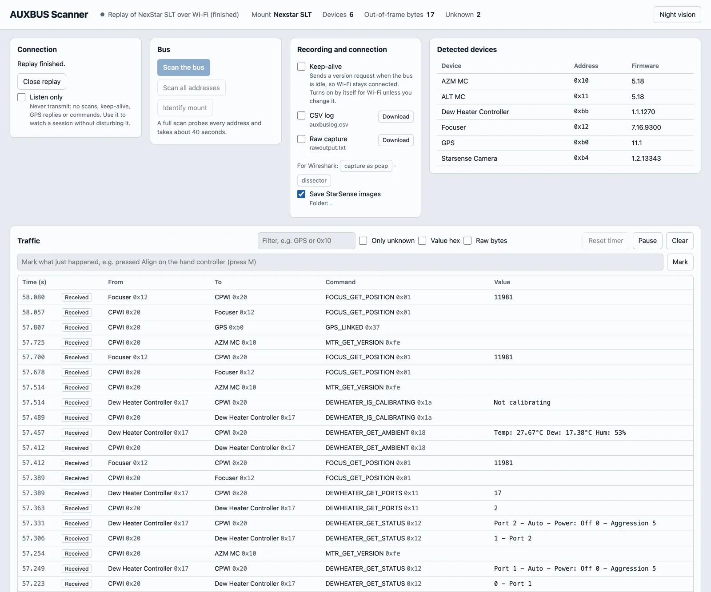
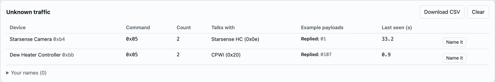

Scan the bus
Finds every device on the mount (motors, hand controller, GPS, StarSense cameras, focuser, dew heater, Wi-Fi module, battery, lights) with its firmware version, and names the mount model.
Open source · GPL-3.0 · Windows, macOS, Linux
AUXBUS Scanner discovers the devices on a Celestron telescope's AUX bus, decodes every packet between them, sends commands, and can emulate a whole mount, so apps such as CPWI can be tried, and their traffic studied, without a telescope.
AZM MC → CPWI MTR_GET_MODEL 0x0783 (Nexstar SLT)
AZM MC → CPWI MTR_GET_VERSION 5.18
ALT MC → CPWI MTR_GET_POSITION -2°42'57.54"
Focuser → CPWI FOCUS_GET_POSITION 11981
GPS → CPWI GPS_GET_FW_VER 11.1
Dew Heater → CPWI DEWHEATER_GET_AMBIENT
Temp: 27.67°C Dew: 17.326°C Hum: 53%
Starsense HC → AZM MC MTR_NMSLEW_RATE 9Real traffic, captured over Wi-Fi between CPWI and a NexStar SLT.
Finds every device on the mount (motors, hand controller, GPS, StarSense cameras, focuser, dew heater, Wi-Fi module, battery, lights) with its firmware version, and names the mount model.
Names the devices and commands of every packet and decodes their data: positions, RA/Dec, plate solves, polar alignment, GPS time and place, dew heater readings, power and more.
Listen-only mode never transmits, so you can watch a hand controller or CPWI talk to the mount. Mark what you just did, and the note lands in every log next to the traffic it explains.
Traffic the catalog cannot name yet is collected with example payloads. Name devices and commands as you decode them; your names are kept in your own catalog.
Everything the console does, as buttons in a page: scans, commands, mount position, focuser, GPS, StarSense captures with the star field drawn live, and a red night-vision theme. Works offline, on the mount's own Wi-Fi, with an optional password.
Log decoded traffic to CSV, record raw captures and replay them later with their original timing, from the console or from the browser.
Connects through a SkyPortal or Evolution Wi-Fi module, a serial adapter on an AUX port, or the hand controller.
Start AUXBUS Scanner with --web and everything happens in a web page: connecting, scanning, sending commands, recording, and watching the traffic live. The page loads nothing from the internet, so it also works on the mount's own Wi-Fi network.
celestron-aux --web # Windows: py -m celestron_aux --web1.2.3.4 when you join a SkyPortal module's own network), a serial adapter on an AUX port, or the hand controller, then Connect. The bus is scanned and the devices appear with their firmware.

Start it with --web 0.0.0.0:8080 --web-password and open http://<this computer's address>:8080 from a device on the same network. The password keeps others on that network out; any user name works. The red Night vision theme keeps your eyes dark adapted at the telescope.
Switch an emulator on and this computer answers on the bus like Celestron devices do. Everything they send is decoded and logged like real traffic, so you can try an app, or work out what it asks for, from your desk.
Each reports its own model and latest known motor firmware (editable). Alt-az mounts that can take a wedge offer one; equatorial mounts turn around a polar axis.
AUXBUS Scanner writes a Wireshark dissector that names every device and command, decodes the data exactly as AUXBUS Scanner does, and checks checksums. It decodes live Wi-Fi captures on TCP port 2000, putting frames split across TCP segments back together, and the captures AUXBUS Scanner records.
Filter with celestron_aux, for example celestron_aux.cmd_name == "MTR_GOTO_FAST" or celestron_aux.value contains "Solved".
# the dissector, for Wireshark's plugins folder
celestron-aux --export-dissector celestron_aux.lua
# a recorded capture as a pcap file
celestron-aux --export-pcap rawoutput.txt capture.pcapAUXBUS Scanner is a Python program. It needs Python 3.9 or later and nothing else; Git is not needed.
cmd and press Enter.py -m pip install https://github.com/platini2/celestron-aux/archive/refs/heads/main.zippy -m celestron_aux --webOn Windows the program is started with py -m celestron_aux (with an underscore). To update later, run the install command again with --upgrade after install. If py is not recognised, Python is not installed yet.
pip3 install https://github.com/platini2/celestron-aux/archive/refs/heads/main.zipcelestron-aux --web # then open http://localhost:8080
celestron-aux wifi 1.2.3.4 # SkyPortal or Evolution Wi-Fi
celestron-aux serial /dev/ttyUSB0 # serial adapter on an AUX port
celestron-aux hc /dev/ttyUSB0 # through a hand controller
celestron-aux playback rawoutput.txt # replay a recorded sessionThe same commands work on Windows with py -m celestron_aux and ports such as COM3. Released versions, as a wheel and a zip, are on the Releases page.
Everything else is in the README, the protocol reference and the changelog.